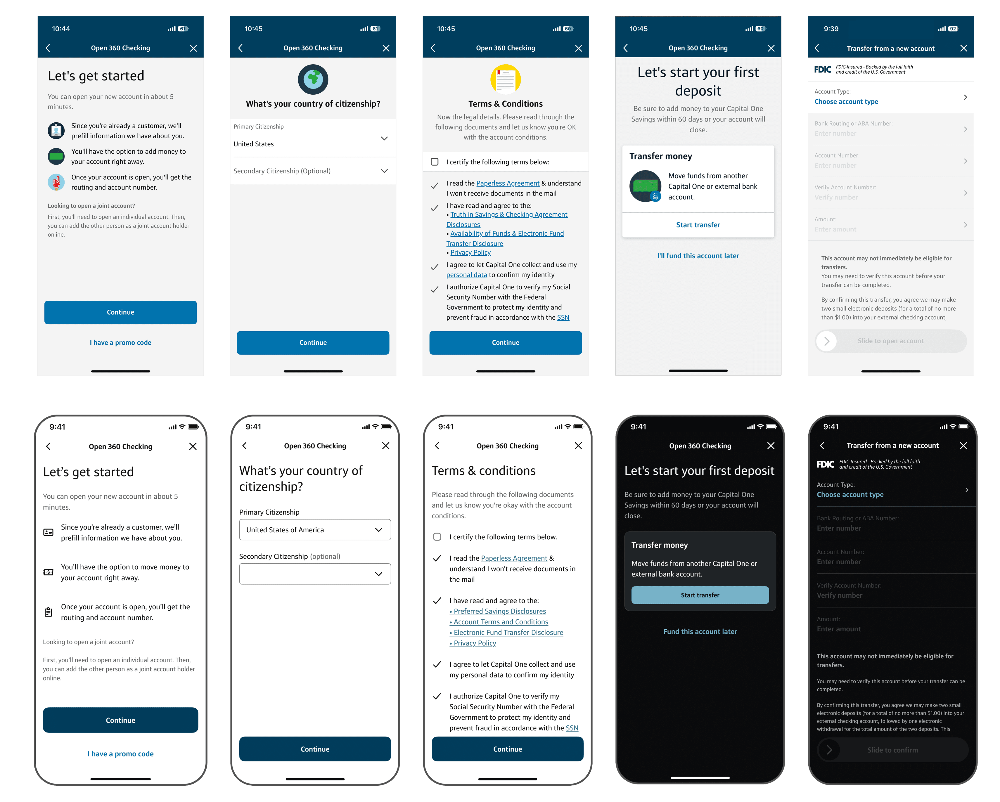

Modernized the account opening UI and enabled dark mode for 2.2M annual banking customers — cut code by 90%, updated an outdated design system, and reduced experimentation cycles from months to weeks.

Two pressures converged. First, the existing account-opening UI risked missing an enterprise modernization deadline. Second, once Capital One globally enabled dark mode, the legacy flow would render with illegible and inaccessible text.
The stakes: customers simply wouldn't be able to open a new bank account within the app.
I worked end-to-end — from scoping and conceptual framing through high-fidelity execution and cross-team evangelism. Rather than patch screen by screen, I framed the refresh at the portfolio level: one coherent system the enterprise could extend, not another siloed project.
The work spanned 4+ teams: Android engineers, enterprise tech, product, design leadership, and the OAO tech group. I served as the design point of contact across them, translating design intent into tokens and specs that engineering could ship the same sprint.
Shipped to 2.2M annual banking customers. Dark mode rendered accessibly; the refreshed UI unblocked the enterprise modernization deadline; downstream experimentation cycles shortened from months to weeks.
If you're a current Capital One customer, you can see the new designs by opening a new bank account in the app today.